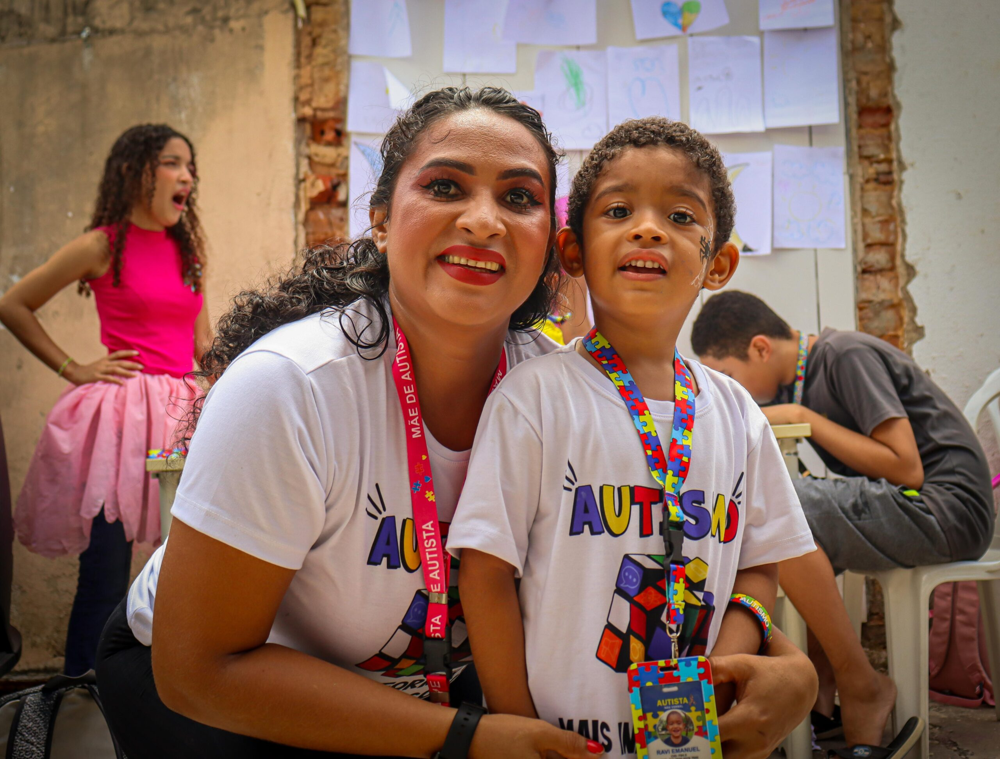

Cultura e Identidade 25/04/2026 O Paradoxo do Acolhimento Piauiense Leonardo Ferreira Negrão Saiba Mais !
 Saúde e Diagnóstico 25/04/2026 O Gargalo na Atenção Primária Evelin Mamani Mejia Saiba Mais !
Mundo do Trabalho 25/04/2026 Inclusão como Vantagem Estratégica Marilia Paulina De Alencar Gonçalves Saiba Mais !